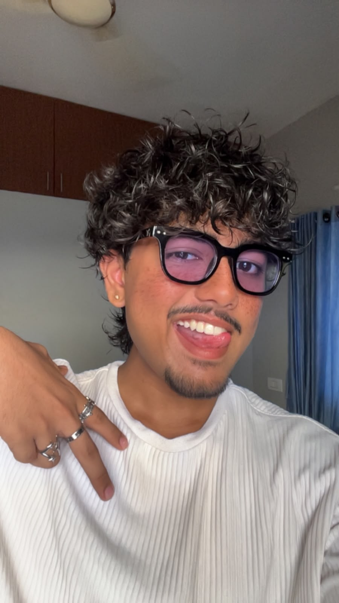

AVAILABLE FOR WHAT'S NEXT
Hi, I’m Aswadev.
I turn ideas into code.
CSE student at JCET Palakkad, building useful things with code and always learning what’s next.

AMDYOUR PHOTO HERE
✦ A LITTLE DIFFERENT
✳
Made with intentionOne project at a time
01 / ABOUT ME
Learning the craft.
Building things that work.
I’m Aswadev M Das, a Computer Science and Engineering student at JCET Palakkad. I enjoy solving problems, learning new tools, and turning ideas into practical software. I’m currently growing my skills across programming, web development, and Linux.
STUDYING ATJCET Palakkad
SKILLSJava · Python · HTML · C++ · C · Linux
02 / A PROJECT I’M PROUD OF
FEATURED PROJECT / 01↗
BUILT WITH PURPOSE
Attendance
Management System
A web based Attendance Management System project. Visit the site to explore the project and see how it helps manage attendance.
03 / SAY HELLO
GOOD THINGS START WITH A HELLO